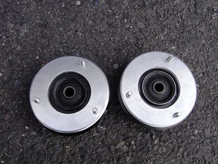
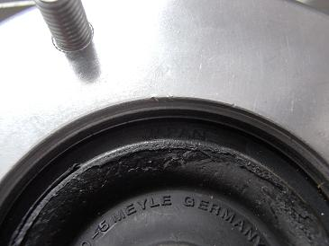
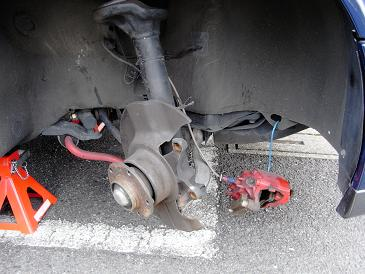
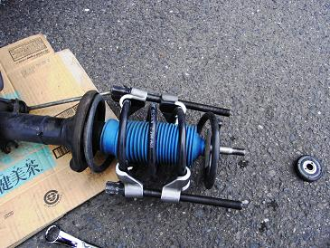
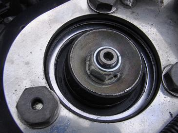
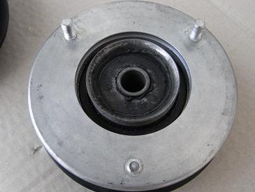
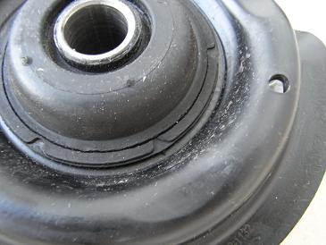
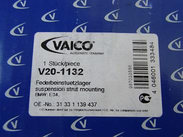
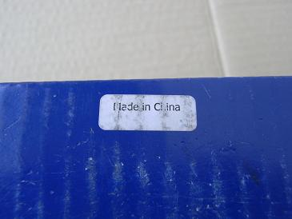

 入手したのはマイレのHDタイプだ。 さすがに今回は、純正品を入手しようとディーラーまで行ったのだが、 目の肥えたE34乗りの皆さんには、「純正品に交換してバッチリだぜ」といった甘いレポートでは通用しないだろう。 そこで思い直し、あえてマイレのHDシリーズを試してみることにした。 決してディーラーでの見積もりを見て「あ、やめときます。。」と帰ってきたわけではないくない（笑 |
 ベアリングには信頼のJAPANの文字が見える。 期待できそうだ。
|
  バラしていきます。 インパクトレンチがあるとかなり作業がはかどる。
|
 交換後の図 ハンドルに伝わってくる道路のザラついた感触が綺麗に消えている。 ハンドルも軽いながら、センターがしっかりしていて気持ち良い！ あとは、どれだけ持つかが気になるところだ。
|
以下はmade in chinaなアッパーマウント   一番下のボルトがねじ切れている。 かなりのトルクで締めたのではなく、3/8ラチェットで「グッ」と締めてこれだ。 2枚目は、亀裂の図 手でグニグニできるほど。。 さすがはmade in china 品質にはまったくこだわっていないようだ。 最近では、HELLAやBOSCHといった一流メーカーの名前が入ったコピー品まで出回っているようだ。
|
  このアッパーマウントが手元へ来たら･･･ 取り付けしないことをオススメします（笑
|